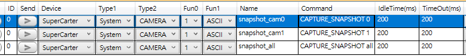

SuperCarter¶
這個文件站現在採單一來源整理:
- 完整閱讀與較佳瀏覽體驗走整個網站。
- 版本變更只維護一份
CHANGELOG，首頁只摘出最新版本。
最新版本修正狀況¶
最新版本：1.11.2 (2026-04-14)¶
What's changed since 1.11.1
✨ 新增
- 新增 HANDOFF.md (Report viewer)
- 新增 README.md (Report viewer)
- add fixed logical slots for cam0..cam9 and expand camera_map.json
- add refresh_cameras/refresh command to rescan devices and reopen sessions
- add HANDOFF.md for next-session continuation
🐞 修復
- 修改 SampleTest 報告用詞
- 修改 Touch Config 的 Panel X / Panel Y 套用行為修正 (Report viewer)
- 修改 Touch Panel 預覽來源擴充與修正 (Report viewer)
- 修改 Touch ID_ XY 座標格式解析支援 (Report viewer)
- 修改 Touch_Raw / Touch ID_ XY parser fallback 機制 (Report viewer)
- 修改 Touch Panel 欄位辨識規則修正 (Report viewer)
- 修改 Touch Panel 說明文字更新 (Report viewer)
- 修改 Table 與下方區塊 splitter 調整 (Report viewer)
- 修改左右 panel splitter 保持可用 (Report viewer)
- 修改 Chart 高度控制項版面修正 (Report viewer)
- 修改 Chart 對 XY 類欄位的資料辨識補強 (Report viewer)
- 修改補強 README.md (Report viewer)
- improve device rescan and hot-plug handling for USB camera changes
- force session reopen on topology changes and reset stale capture state
♻️ 調整
[1.11.1] - 2026-04-05¶
What's changed since 1.11.1
✨ 新增
🐞 修復
- 修正無法監控攝影
♻️ 調整
[1.11.0] - 2026-04-01¶
What's changed since 1.10.4
feat(see10): 強化 runtime 控制、封裝流程、文件內容與版控清理
✨ 新增
- 新增 CLI help 指令、優化 help 排版，並於啟動時顯示 runtime 與版本資訊
- 新增對已開啟相機的批次截圖與錄影控制支援
- 新增 SEE 的 build / deploy 腳本，整理封裝流程
- 更新 README 與 README_user，補齊正式指令說明、範例、版本標頭與操作注意事項
- 更新 .gitignore，排除 SEE 本機建置、runtime 與封裝產物
🐞 修復
- 修復 SEE 在非互動模式下啟動時會阻塞於 CLI 輸入的問題
- 修復相機預覽、關閉流程與 backend fallback 的處理及診斷訊息
- 修復 SuperCarter 對 SEE10 的啟動狀態顯示，明確呈現 runtime 路徑與實際啟動行為
♻️ 調整
- 調整 SuperEagleEye 以可見 console 啟動，提升本機除錯能力
- 調整截圖命名流程，將 SuperCarter 的指令名稱傳入 SEE，並統一更新檔名格式
- 對齊本地 dist runtime 路徑、封裝腳本與 csproj 輸出結構
- 重構 SuperCarter 的 SEE 指令解析流程，不再將 camera_id 固定為 cam0
- 支援 camN、數字別名與 all 等相機目標寫法
[1.10.4] - 2026-03-25¶
What's changed since 1.10.3
✨ 新增
🐞 修復
- Remedy Monitor 1.0 Powersupply interface not support
- 修改功能檢測 init_function 詢問 SC_FW, SC_HW, SE_FW, SE_HW
♻️ 調整
- 移除功能檢測SC_FW, SC_HW測試項目
- 調整功能檢測 Sampletest Volspec 的位置
[1.10.3] - 2026-03-20¶
What's changed since 1.10.2
✨ 新增
🐞 修復
- 修正 TB 觸控測試秒數約 5 秒, 座標蒐集 Timeout設定 4.5 秒
♻️ 調整
[1.10.2] - 2026-03-16¶
What's changed since 1.10.1
✨ 新增
- 新增 CSLE005 分析器
- 新增 CL200A 分析器
- 新增 CL200A 即時顯示架構
- 新增預發送 CL200A 的啟動指令於監控流程當中
🐞 修復
- 修改 TB 觸控事件蒐集座標資料的方式
- 修改 TB 觸控事件運行的時間調整
- 修改 IsContinuousCommandSending 的設置
- 修改 sampletest 恢復 第三部分的報告結果
- 修改 ambient test 調控介面
- 修改即時性的 CS_LE005 指令發送方式
- 修改 ALS 監控報告輸出
- 修改 ALS 監控封包解析器流程
- 修改 ALS 監控報告格式
- 修改 ALS 監控 TestParameter 指令項目
- 修改 ALS 監控 FIDM 目標選擇
- 修改ALS 基本參數傳遞綁定
- 修改ALS 基本參數傳遞綁定
♻️ 調整
- 修正 CL-200A 發送指令
- 修正 ID 30 為固定 CL-200A發送介面
[1.10.1] - 2026-03-09¶
What's changed since 1.10.0
✨ 新增
- 新增 SC SE FIDM 版本名稱的欄位顯示
- 新增功能檢測報告格式中溫度的符號
- 新增功能檢測報告格式中濕度的符號
🐞 修復
- 修正 Ambient light test 色溫與照度的錯位錯誤
- 修改功能檢測報告格式中顯示，診斷的字串均須顯示
♻️ 調整
- 移除關於功能檢測報告格式中 3 : Label function的項目
[1.10.0] - 2026-03-05¶
What's changed since 1.9.8
✨ 新增
- 新增 CL-200A 的流程狀態切換(部分完成)
- 新增 CL-200A 的監控流程(部分完成)
- 新增可調整的屬性項目，關於 COM
- 新增UCS 封包解析器
- 修改 SC SE 裝置版本顯示
- 修改 SC SE 裝置版本封包解析邏輯
- 新增 TB 報告格式 的屬性欄位: chamberstatus
- 新增 TB 報告格式 的屬性欄位: runtime option
- 新增 ParseFuncDA_Rd20 解析器
- 新增判斷是否進行訊號偵測當 runtime option 為外部設備主導時候
- 新增 ambient light light sensor test 即時性面板參數
- 新增 ambient light senser outputdata format
- 新增監控模式 1.0 的二次發送
- 新增監控模式 2.0 的二次發送 (Testbench)
🐞 修復
- 修改 ambient ligth sensor test 測試流程
- 修改 ambient ligth sensor test 報告書出
- 修改 ambient ligth sensor test 報告格式
- 修改 ambient ligth sensor test 指令
- 修改自動化配置模組的設定 - Lock鎖的邏輯設定
- 修改 TB touch的等待時間
- 修改 TB touch buffer 封包封包分析
- 修改自動化配置模組的版本更新
- 修改 TB 模式下的平行處理程序 Test-Condition, Test-Parameter
- 修改 chamber 模式下的運行機制 - 隨著腳本 block 的數量變化
♻️ 調整
- 修改 IMonitorStepHandler 繼承的寫法
[1.9.8] - 2026-02-05¶
What's changed since 1.9.6
✨ 新增
🐞 修復
- 修改 TB 監控模式腳本指令轉換屬性遺漏 issue (#31)
♻️ 調整
[1.9.7] - 2026-02-03¶
What's changed since 1.9.6
✨ 新增
- 新增 sampletest 增加 config名稱
- 新增 sampletest hmf 測試程序的啟用開關
- 新增 sampletest 測試資訊於報告內容中，關於 configuration file name
- 新增 sampletest 測試資訊於報告內容中，關於 HMF file name
- 新增 腳本資訊於 TB 監控模式報告中
- 新增 軟體版本資訊於 TB 監控模式報告中
- 新增 systeminfo 於 appdata 當中
🐞 修復
- 修改 TB 監控模式報告內容
- 修改 sampletest hmf 測試程序的流程
♻️ 調整
[1.9.6] - 2026-01-30¶
What's changed since 1.9.5
✨ 新增
🐞 修復
- 修改 TB模式 運行策略判斷
♻️ 調整
[1.9.5] - 2026-01-23¶
What's changed since 1.9.4
✨ 新增
- 建置FA屬性(為了二次發送)[not test]
🐞 修復
- 修改 TestBench_config_RuntimeStrategy 載入的條件(誤移AdaptiveRuntimeOptimizationStrategy項目)
♻️ 調整
- chore: ReportViewer format
[1.9.4] - 2026-01-22¶
What's changed since 1.9.3
✨ 新增
- 建立Ambient Light Test 腳本編輯頁面
- 建立Color temperature Test 腳本編輯頁面
- 建立Ambient Light Sensor 屬性模組
- 建立Color temperature Test 屬性模組
- 建立 ReportViewer 的草稿
🐞 修復
- 修改 TB 模式觸擊測試的參數
- 修改 TB 模式觸擊流程
- 修改 COM baudrate 顯示與設定的方式
[1.9.3] - 2026-01-05¶
What's changed since 1.9.2
✨ 新增
- 建置EOL的測試項目
🐞 修復
- 修改 sampletest 靜態電流的先行等待時間
- 修改 sampletest 觸控的中間座標的規格
[1.9.3] - 2026-01-05¶
What's changed since 1.9.2
✨ 新增
- 建置EOL的測試項目
🐞 修復
- 修改 sampletest 靜態電流的先行等待時間
- 修改 sampletest 觸控的中間座標的規格
[1.9.2] - 2025-12-18¶
What's changed since 1.9.1
✨ 新增
🐞 修復
- 修改 sampletest Check_TouchatMiddleCornor_5finger 的允許範圍
- 修改 sampletest Check_TouchatMiddleCornor_10finger 的允許範圍
- 修改 sampletest測試用圖
- 修改 sampletest 目視檢驗的視窗模板
♻️ 調整
[1.9.1] - 2025-12-15¶
What's changed since 1.9.0
✨ 新增
- 新增觸控數值卡控策略於 sampletest 測試
- 新增觸控數值卡控描述於 sampletest 的輸出報告中
- 新增 hmf 相關的功能
🐞 修復
- 修改 sampletest 輸出報告中觸控 NG 的描述資訊(原本沒有)
- 修改 hmf 模組
♻️ 調整
[1.9.0] - 2025-11-24¶
What's changed since 1.7.28
✨ 新增
- 新增監控模式選項 - 預設
- 新增監控模式選項 - 與爐子進行同步
- 新增監控模式選項 - 軟體自己運算
- 新增 HMF 檔案讀取
- 新增爐子狀態的選擇欄位於腳本屬性
🐞 修復
- TB 模式 觸發運行過程鎖住相關參數介面的操作
- 修復封包未接收的狀況(嘗試詢問三次暫存區域)
♻️ 調整
- 將原先軟體計算部分拆分
- 移除說明的頁面
[1.7.22] - 2025-09-30¶
What's changed since 1.7.21
✨ 新增
- 新增條件切換的紀錄於功能檢測( #28)
🐞 修復
- 修改功能檢測的 Echo 溫度顯示
♻️ 調整
[1.7.21] - 2025-09-19¶
What's changed since 1.7.18
✨ 新增
- 新增 block 運行的時間控制
🐞 修復
- 修改 sampletest 的 serialnumber 的位址
- 修改 sampletest 外觀檢測的文字敘述於輸出的測試報告中
- 修改 Sampletest SE 溫度顯示與計算方式
- 修改 Testbench SE 溫度顯示與計算方式
- 修改 scrolling SE 溫度顯示與計算方式
- 修改 scrolling SE 溫度小數點顯示
- 修正 sampletest 測試項目的文字說明於靜態電流的檢測於特殊電壓下
- 修改 Testbench 時間優化 在 block loop 運行上新增截斷機制
- 修改 Testbench 資料輸出合併電流欄位的數據
- 數據長度從 5 萬行變成 10 萬行
♻️ 調整
- 調整 sampletest 的 serialnumber 的頁面位置
- 調整 Testbench FA 系列 04 電壓精度調整
- 調整 Testbench 電流經度顯示(毫安培)
- 調整 Testbench 標題位置
- 移除 功能檢測初期電壓顯示
[1.7.7] - 2025-08-11¶
What's changed since 1.7.5
✨ 新增
- 新增 觸控的監控流程
- 新增 sampletest 建置 wakeup voltage 測試項目
- 新增 obserableobj 繼承項目
- 新增Sampletest 實驗參數配置設定
- 新增 sampletest 關於 app version
- 新增 TB 監控系統 Touch 指令
- 新增 監控功能 轉態更新Testcondition 寫成NA
- 新增感測器配置模組化
- 新增功能檢測 測試項目加入中斷參數
- 新增 sampletest 溫溼度通訊
🐞 修復
- 修改 sampletest 測試項目族群的名稱
- 修改 移除Voltage Tolerance 的睡眠模式的監控
- 修改 sampletest 電壓上下限的計算方式
- 修改 sampletest 觸控計時方式
- 修改 sampletest 觸控的運行方式與監控方法
- 修改 sampletest 當結束程序時須使echo進入安培檔位
- 修改 Testbench monitoring 當結束程序時須使echo進入安培檔位
- 修改電壓的計算方式，採用百分比容差
- 修改 sampletest 參數配置的格式
- 修改監控程序的ALS 屬性
- 修改電壓上限計算方式
- 修改電壓移除下限
- 移除 sampletest rawdata欄位
- 修改功能檢測電源供應的設置方式
- 修改IRS (x6)的狀態暫由 預設(x4)替之
- 修改 Sampletest 設置Powermode的統一方法
♻️ 調整
- 調整 sampletest 測試的開關機制
[1.7.5] - 2025-08-05¶
What's changed since 1.7.4
✨ 新增
- 新增 觸控的監控流程
🐞 修復
- 修改電流顯示方式
- 修改 touch idletime 的時間控制
- 修改監控腳本的位址顯示
- 修改監控程序的目標屬性被清除的動作
- 修改安培檔位的小數點取用的顯示方式
- 修改安培檔位的小數點取用的機制
- 修改即時監控的電流顯示
- 修改監控程序 外部電壓值使其分配給所有通道
- 新增PowerSupplyStatus ON/OFF
- 新增即時監控的安培/微安培 欄位於介面中
♻️ 調整
[1.7.4] - 2025-08-04¶
What's changed since 1.6.48
✨ 新增
- 新增 Duration 時間的等待
- 新增 ALS 的欄位
🐞 修復
- 修改溫溼度顯示異常
- 修正溫度 offset 的數值
- 修正 TX[n]feedbackVol 輸出錯位
- 修正 TX[n]DisplayAngle 輸出錯位
- 修改 降低 Remote ctrl table 電流設定
♻️ 調整
- 調整 ExecuteworkflowAsync 工作排程
[1.6.51] - 2025-07-28¶
What's changed since 1.6.48
✨ 新增
- 新增版本顯示
- 新增對預留的Ack的長度與預設的長度做判斷
- 新增 詢問版本功能 針對 Super-series FW HW
- 新增 版本功能的屬性 針對 Super-series FW HW
- 新增 版本功能的顯示 針對 Super-series FW HW
- 新增 詢問SuperEcho 當前裝置配置 的功能
- 新增 顯示 SuperEcho 當前裝置配置 的功能
- 新增控制面板的選單
- 新增控制面板的後端功能
- [x] Normal/Sleep
- [x] Brightness
- [x] Pattern/Image
- [x] PowerSupplyVoltage (Remote ctrl)
- [x] SuperCarrier button Enable/Disable
- [x] SuperEcho button Enable/Disable
- [x] Display Power on/off
- [x] Remote Ctrl Dashboard of Power supply(just "unlock")
- [x] SuperCarrier SW Reset
- [x] Read SC/SE - FW/HW ver.
- [x] Add Sleep sequence (with poweroff)
-
[x] 讀取 superecho 感測器收集的方式
-
[ ] 監控資料輸出的報告異常
- [ ] 功能檢查電流取用
- [ ] 功能檢查與設備連結
🐞 修復
- 修改 Testbench 偵測硬體裝置流程,採多工形式
- 修改 將 toml 檔案形式修改成 yaml
♻️ 調整 UCS_DQA Supercarrier 2.0_20250724.xlsx
[1.6.48] - 2025-07-15¶
What's changed since 1.6.43
✨ 新增
- 新增 DB 系列指令(僅限基礎顏色)
- 新增 Test Bench 運行流程
- 新增 指令分析於 DB 系列(僅限基礎顏色)
- 新增 TestBench 裝置匹配功能
- 新增 TestBench 資料輸出
- 新增 感測器數值即時撥放的功能
- 新增 SuperEcho 感測器偵測機制
- 新增 SuperCarrier 匹配條件
- 新增 Super 系列的即時動態欄位
- 新增 TestBench Lcok 機制
- 新增 TestBench 感測器總表輸出
- 新增 Powermode 指令觸發廣播所有 Comport
- 新增 SuperEcho 電流策略的告知機制
- 新增 動態腳本分配的方法
- 新增 通訊指令的分析器
🐞 修復
- 修改 隨插隨拔 Super 裝置偵測方法(採基本PIP識別)
- 修改 Outputdata的預設路徑(監控方法/Testbench)
- 修改 同步運行 (SyncPoint)於 Outputdata 指令的(timeout 5sec)
- 修改 監控流程的 TargetIMG 的設置方式
- 修改 SuperEcho 感測器視圖加入格線
- 修改 Testbench 腳本轉化的程序-> 移動到運行腳本之前
- 修改 執行緒競爭於 Testbench 監控時
- 修改 ShareQ 未正常關閉造成資料截斷的現象(kill all analysisQ token after Finished monitorinng)
- 修改 JSON script editor 預設路徑
♻️ 調整
- chore: ignore buld output and archives
- Fited: TestBench TargetIMG function.
- Refactor: Testbench outputdata interface
[1.6.44] - 2025-06-27¶
What's changed since 1.6.43
✨ 新增
- 新增TestBench裝置感測試器的巡覽模式
- 新增腳本儲存提示
- 新增自動偵測 Super-device
- 新增 SuperEcho 硬體裝置的屬性
- 新增 監控功能的頁面
🐞 修復
- 修改接收方式改為同步方法於監控模式
- Fixed Power Supply Detection err
- 修改 Device-mapping table 的屬性變化(顏色)
♻️ 調整
- Update TouchPad@v1.7.3
- Update ISP@v5.1
- chore: ignore buld output and archives
- chore: adjust gitignore
[1.6.42] - 2025-06-17¶
What's changed since 1.6.41
✨ 新增
- 新增 SuperEcho 感測器數據為空集合的判斷
- 新增 SampleTest 新增測試項目 bootloader, partnumber
- 新增刷新通訊界面的 matrix
- 新增 TB 硬體更新與 COMPORT選取的更新
- 新增 TB 硬體偵測的更新
- Add Refresh SuperDevice when the SuperDevice be removed.
🐞 修復
- 修正 workflowIndex 給 SendAndReceiveDatabatchQ 超出規格的問題
- 修正 SuperEcho 裝置的執行緒異常遭占用
- 修正 TB 頁面
- 修正 監控系統的接收方法
- 修正 TBMM 裝置匹配
- Fit Nlog.config content
♻️ 調整
- 修改 SH85 數量 3 -> 2
- 移除 Measurement devices selection and enable SH85
- 移除SH85 卡控項目
[1.6.41] - 2025-06-04¶
What's changed since 1.6.40
✨ 新增
- 新增未知裝置圖示
- 新增基礎類別針對Testbench屬性
- 新增屬性轉化的條件 delaytime => IdleTime
- 新增 監控腳本 觸發清除基礎腳本程序，當觸發清除 TestCondition or TestParameter 後清除該項目的 hashcode
🐞 修復
- 修改JSON當中於舊版 delaytime 屬性名稱 轉化成 IdleTime ，使其向下兼容
- 修改LightSensor偵測的部分程式碼
- 修改硬體偵測的superEcho感測器的屬性顏色變化根據本身屬性
- 修改硬體偵測配置方法
- 修改偵測的計算方法
- 修改自動化偵測格式
- 修改 JSON 另存基本腳本的預設檔案名稱
♻️ 調整
- 調整 doc文件
- 調整型別通訊概念的型別，由介面改為抽象
- 調整 TestBench 硬體頁面的排版
[1.6.40] - 2025-05-21¶
What's changed since 1.6.39
✨ 新增
- 新增 TestBench 硬體裝置的通訊機制
- 新增 TestBench 用圖
🐞 修復
- 修正 通訊接口 發送的流程
- 修正 錯誤訊息回饋的判斷機制
♻️ 調整
- TestBench 視覺頁面
- 變數綁定
Supplemental Docs¶
快速上手
安裝¶
本章說明 SuperCarter 在 Windows 上的安裝需求，包含執行所需的 Python 環境與套件安裝流程。
前置需求¶
- Windows 10 或 Windows 11
- .NET Desktop Runtime 6.0
- Python 3.12
- 相機設備驅動與可用的 USB / 內建攝影機
必要安裝項目¶
1. 安裝 SuperCarter 執行所需的 .NET Runtime¶
SuperCarter 專案目前目標框架為 net6.0-windows，請安裝 .NET Desktop Runtime 6.0。
- 官方下載頁面：https://dotnet.microsoft.com/download/dotnet/6.0
- 若電腦是一般 64 位元 Windows，請優先安裝
Desktop Runtime 6.0的x64版本
安裝完成後，可在 PowerShell 確認：
dotnet --list-runtimes
2. 安裝 Python 3.12¶
SuperCarter 的 Python 功能依賴 Python 執行環境，建議安裝 Python 3.12。
- 可直接從 Microsoft Store 安裝 Python 3.12
- 若無法使用 Microsoft Store，再改用官方下載頁面：https://www.python.org/downloads/windows/
- 若使用官方安裝程式，安裝時建議勾選
Add python.exe to PATH
安裝完成後，可在 PowerShell 確認：
py -3.12 --version
python --version
Python 環境與套件安裝¶
依目前程式內容，至少需要以下套件：
opencv-pythongrpciogrpcio-toolsprotobuf
安裝必要套件¶
py -3.12 -m pip install --upgrade pip
py -3.12 -m pip install opencv-python grpcio grpcio-tools protobuf
若電腦上無法使用 py，可改用：
python -m pip install --upgrade pip
python -m pip install opencv-python grpcio grpcio-tools protobuf
啟動與檢查¶
啟動 SuperCarter¶
完成上述安裝後，再依專案提供的方式啟動 SuperCarter，並確認：
- 主程式可以正常開啟
- Python 相依套件可正常載入
- 相機預覽畫面可正常顯示
- 沒有出現缺少 Python 套件或 .NET Runtime 的錯誤訊息
常見問題¶
找不到 python 或 py¶
- 重新安裝 Python，並確認已勾選
Add python.exe to PATH - 重新開啟 PowerShell 後再試一次
啟動時出現 No module named cv2 或 grpc¶
- 重新執行：
py -3.12 -m pip install opencv-python grpcio grpcio-tools protobuf
SuperCarter 可啟動，但相機功能無法使用¶
- 確認 Windows 裝置管理員可看到相機
- 確認相機未被其他程式占用
- 確認 Python 套件已依上述步驟完成安裝
使用流程¶
本章說明完成安裝後，如何以一般使用者角度操作 SuperCarter。
第一次使用¶
第一次使用時，建議依照以下順序進行：
- 確認電腦已完成安裝需求
- 確認相機與相關設備已正確連接
- 啟動 SuperCarter
- 檢查主畫面是否正常載入
- 確認相機預覽畫面可正常顯示
若程式可以正常開啟，且相機畫面可正常顯示，即表示基本環境已可使用。
日常操作¶
一般使用時，可依照以下流程操作：
- 先接好相機與相關設備
- 啟動 SuperCarter
- 確認程式已正確辨識設備
- 依需求開始預覽、測試或錄製
- 操作完成後檢查結果
- 關閉 SuperCarter
建議避免在 SuperCarter 執行期間，同時開啟其他會占用相機的程式。
相機與設備確認¶
啟動後，建議先確認以下項目：
- 相機已正確連接
- 系統可辨識相機裝置
- 預覽畫面可正常顯示
- 操作過程中沒有出現錯誤訊息
若預覽畫面異常、黑畫面或無法開啟，請先確認：
- 相機是否有正確插入
- 相機驅動是否正常
- 是否有其他程式正在使用同一台相機
如需更多相機操作與輸出路徑說明，請參考相機說明。
結果檢查¶
完成操作後，建議檢查以下內容：
- 預期功能是否有正常執行
- 輸出結果是否已產生
- 畫面、影像或資料內容是否正確
- 執行過程中是否有警告或錯誤訊息
若結果與預期不符，建議先重新啟動程式後再次操作。
常見情況¶
程式無法啟動¶
請先確認：
.NET Desktop Runtime 6.0已安裝Python 3.12已安裝- 必要 Python 套件已完成安裝
相機無法使用¶
請先確認：
- 相機已連接並可在 Windows 中被辨識
- 相機未被其他程式占用
- SuperCarter 啟動後沒有顯示相關錯誤訊息
執行過程中出現錯誤¶
請先嘗試以下步驟：
- 關閉 SuperCarter
- 確認設備連接狀態
- 重新啟動程式
- 再次執行相同步驟確認是否仍會發生
若問題持續發生，請將錯誤訊息與操作情境提供給維護人員協助確認。
相機說明¶
本章整理 SuperCarter 中與相機操作相關的基本說明，包含常用指令概念、相機目標表示方式，以及輸出資料夾的使用方式。
基本概念¶
SuperCarter 會透過相機執行元件處理預覽、拍照與錄影功能。
使用時請先確認：
- 相機已正確連接
- Windows 可正常辨識相機
- SuperCarter 已正常啟動
- 預覽畫面可正常顯示
相機目標說明¶
系統中的 cam0、cam1、cam2 為邏輯相機 id。
在操作概念上：
@0對應cam0@1對應cam1@2對應cam2
請注意：
- 這些邏輯相機 id 不一定等同於 Windows 的實體裝置 index
- 如果實際開啟到錯誤的相機，通常需要由維護人員檢查對應設定
- 如果流程只會使用一台相機，建議固定使用同一個目標
常用操作概念¶
常見操作包括：
- 開啟相機
- 關閉相機
- 拍攝快照
- 開始錄影
- 停止錄影
- 調整相機設定
在多相機情境下，部分操作可套用到單一相機，部分則可套用到所有已開啟的相機。
例如：
- 對單一相機拍照
- 對所有已開啟的相機同時拍照
- 對指定相機開始或停止錄影
拍照與錄影¶
目前支援的常見行為如下：
- 可對單一相機進行拍照
- 可對所有已開啟的相機同時拍照
- 可對指定相機開始錄影
- 可對指定相機停止錄影
建議在操作前先確認：
- 相機已成功開啟
- 預覽畫面正常
- 儲存路徑可正常寫入
輸出資料夾¶
拍照與錄影產生的檔案會寫入目前設定的輸出資料夾。
建議使用方式：
- 在 SuperCarter 中設定固定且容易找到的輸出路徑
- 使用本機可寫入的資料夾
- 定期確認輸出檔案是否已正確產生
如果檔案沒有出現在預期位置，請先確認：
- SuperCarter 目前設定的儲存路徑
- 該資料夾是否有寫入權限
- 操作過程中是否有出現錯誤訊息
停止使用¶
完成操作後，建議使用 SuperCarter 內建的停止或關閉方式結束相機操作。
若遇到異常，建議先：
- 停止目前操作
- 關閉 SuperCarter
- 確認相機連線狀態
- 重新啟動程式後再試一次
常見情況¶
找不到相機¶
請先確認： - 用 Windows 的內建相機打開確認 - 相機已正確連接 - Windows 裝置管理員可看到相機 - 沒有其他程式正在占用相機
預覽畫面異常或黑畫面¶
請先確認：
- 相機驅動正常
- 麥克風，相機等等的使用權限相關
- 連接線材與裝置正常
- 相機已被正確辨識
沒有產生拍照或錄影檔案¶
請先確認：
- 輸出資料夾設定正確
- 輸出路徑具有寫入權限
- 操作過程中沒有發生錯誤
腳本系統
腳本系統概念¶
本章說明 SuperCarter 目前腳本系統的用途、檔案位置與基本組成。
腳本系統的用途¶
SuperCarter 的腳本系統主要用於兩類情境：
- 一般指令序列編輯與保存
- 監控流程的任務、區塊與條件設定
依目前程式設計，腳本不只是單純的指令清單，還會包含：
- 指令要送到哪個裝置
- 指令的資料格式與結尾符號
- 每筆指令的等待時間與逾時時間
- 是否需要額外的檢查邏輯
- 在監控模式下的 Block、Task、TestCondition、TestParameter 結構
預設腳本路徑¶
程式啟動時，會建立並使用使用者文件目錄下的腳本資料夾：
%USERPROFILE%\Documents\SuperCarter\scripts
另外也會建立：
%USERPROFILE%\Documents\SuperCarter\scripts\macro
程式會分別記住：
ROOT_DIR_Path_TB_scriptROOT_DIR_Path_Monitor_script
前者主要對應 Test Bench 匯入 JSON 腳本時的預設資料夾，後者主要對應監控腳本編輯器使用的預設資料夾。
腳本的兩種主要型態¶
1. 指令序列腳本¶
這類腳本由多筆 ScriptItemtype 組成，每筆腳本項目都可定義：
DeviceCMDType1ParmCMDFun1ParmCommandIdleTimeTimeOutLoopSyncPoint- 延伸偵測設定
一般來說，這類腳本適合用來描述裝置通訊流程。
2. 監控腳本¶
監控腳本以 JSON 保存，核心內容包括：
MainLoopEventPeriodControllerModeHandleBlockNodeListScriptLibListThresholds
其中 BlockNodeList 會再往下包含多個 Task，而每個 Task 又可以分成：
TestConditionTestParameter
這也是目前 UI 中常見的兩條腳本匯入路徑。
指令來源¶
腳本編輯器會從命令庫載入可選指令群組，目前可見的主要來源包括：
CMD_SuperCarrier.jsonCMD_SuperEcho.jsonCMD_PowerSupply.json
因此腳本編輯並不是完全自由輸入所有內容，而是結合命令庫與使用者自訂項目來建立。
檔案格式¶
依目前程式實作，腳本系統同時使用兩種保存格式：
- XML
- JSON
XML¶
XML 主要用於保存指令序列，例如 SaveScriptTestSequencefile() 寫出的 TestSuite/TestSequence/Command 結構。
常見欄位包括：
DeviceCMDType1ParmCMDFun1ParmCommandIdleTimeTimeOutLoopSyncPointDetectHandle
JSON¶
JSON 主要用於保存監控腳本，內容會包含：
- 主流程設定
- Block / Task 結構
- 測試條件與參數腳本關聯
- 閾值檢查設定
程式內也保留了舊名稱與新名稱之間的對應，例如：
Preliminary對應TestConditionPeriodic對應TestParameterSeries0對應SuperCarrierSeries1對應SuperEchoSeries3對應PowerSupplyDelaytime對應IdleTime
這代表目前系統在讀取舊腳本資料時，仍具備一定相容性。
腳本與監控任務的關係¶
在監控模式中，腳本通常不是直接整包執行，而是被拆分並掛到 Task 的不同欄位：
TestCondition用於前置條件或條件性檢查TestParameter用於週期性測試或參數讀取
每個 Task 還會計算：
TestConditionCycletime_msTestParameterCycletime_ms
這些數值會進一步影響整個 Block 與程式的估計執行時間。
編輯器¶
本章說明目前 SuperCarter 中與腳本編輯有關的主要畫面與操作方式。
編輯器的兩條主線¶
依目前程式結構，腳本編輯主要分成兩種：
- 一般腳本編輯器
- 監控腳本編輯器
兩者都會使用 ScriptItemtype 作為基本指令資料，但使用情境不同。
一般腳本編輯器¶
一般腳本編輯器主要用於建立與保存指令序列。
其特點包括：
- 會載入裝置命令庫
- 可選擇不同裝置類型
- 可編輯單筆指令內容
- 可將腳本保存為 XML 格式
目前命令庫主要來自：
CMD_SuperCarrier.jsonCMD_SuperEcho.jsonCMD_PowerSupply.json
因此使用者通常會先從命令群組中選擇合適的命令，再調整欄位參數。
監控腳本編輯器¶
監控腳本編輯器對應較高層級的流程編排。它不只編輯單筆指令，而是管理：
BlockTaskTestConditionTestParameterScriptLib
依目前程式行為，監控編輯器啟動時會先建立一個預設 Block，並以樹狀方式呈現。
監控腳本的典型流程¶
典型操作順序通常是：
- 建立或開啟監控腳本
- 新增 Block
- 在 Block 內新增 Task
- 匯入或指定
TestCondition - 匯入或指定
TestParameter - 設定週期、迴圈與其他欄位
- 儲存為 JSON 腳本
這部分也和既有操作筆記中提到的「將腳本匯入 Task 的 TestCondition」一致。
Script Library¶
監控腳本編輯器中有一個重要概念是 ScriptLibList。
它的用途是把可重複使用的指令序列集中管理，然後再寫入 Task：
- 寫入
TestCondition - 寫入
TestParameter
依目前 UI 綁定，ScriptLibraryView 會提供：
WriteToTestConditionWriteToTestParameter
也就是從腳本庫把現有序列指定到目前選取的 Task。
匯入與匯出¶
匯出¶
依目前實作：
- 一般指令序列可保存為 XML
- 監控腳本可保存為 JSON
匯入¶
監控腳本編輯器可以匯入既有腳本內容，並還原以下資料：
MainloopEventPeriodControllerModeValueBlockNodeListScriptLibList- 各項 Threshold 設定
此外，Task 也可以分別掛入：
TestConditionCommandsTestParameterCommands
並保留對應的路徑資訊：
TestConditionCMDsPathTestConditionCMDsFullPathTestParameterCMDsPathTestParameterCMDsFullPath
編輯器中常見的操作重點¶
新增指令¶
新增指令時，通常需要先決定：
- 目標裝置
- 指令類型
- 資料格式
- 實際命令內容
複製與重用¶
腳本系統支援將序列保存後再重複匯入使用，因此適合把常用流程做成 Script Library。
修改後重新計算¶
監控腳本中的 Block 與 Task 會重新計算：
- 條件腳本週期時間
- 參數腳本週期時間
- Block cycle time
- Block total time
- Program estimated time
因此當內容變更後，畫面中的估計時間也可能跟著改變。
實務建議¶
- 常用的固定流程建議整理成 Script Library，避免每次重新輸入
TestCondition與TestParameter建議分開管理，不要混成同一套序列- 修改腳本後，建議確認目前選取的 Task 是否已同步更新
- 如果有清除腳本或重新匯入的動作，應重新確認 Task 名稱與腳本路徑欄位
執行模式¶
本章說明 SuperCarter 腳本系統目前可看出的主要執行方式，以及在監控流程中的腳本掛載方式。
腳本執行的基本觀念¶
目前程式中的腳本不只有一種執行方式。依場景不同，大致可以分成：
- 直接執行單筆指令
- 執行指令序列
- 在監控模式中作為
TestCondition - 在監控模式中作為
TestParameter
這些模式雖然共用部分資料結構，但用途不同。
單筆指令模式¶
在一般腳本編輯器中，單筆 ScriptItemtype 可以直接對應一條待送出的命令。
當 CMDType1Parm = CMD 時，系統會依設定：
- 解析
HEX或ASCII - 視需要附加
CR、LF、CRLF - 轉成實際送出的位元組資料
這種模式最適合做單步驗證或簡單通訊測試。
Macro 模式¶
當 CMDType1Parm = Macro 時，系統不是直接執行 Command 欄位，而是會去讀取對應的 Macro 檔案，並展開為 SubSequences。
這表示：
- 一筆腳本項目可以代表一整組子腳本
- Macro 本質上是可重複使用的指令集合
- 適合把常見流程封裝起來
Delay 與 System 類型¶
依目前欄位設計，CMDType1Parm 也支援：
DelaySystem
這代表腳本列不一定都是對外部裝置送 UART 指令，也可以描述流程控制或系統層級操作。
目前文件先以「可作為流程控制列」理解即可；若後續這兩類型有更明確 UI 流程，再建議補充專章。
監控模式¶
在監控腳本中，腳本通常不是直接平鋪執行，而是掛在 Task 內的兩個位置：
TestConditionTestParameter
TestCondition¶
TestCondition 可視為前置條件或條件性檢查用腳本。
常見用途：
- 先確認裝置狀態
- 先做必要的準備動作
- 在任務開始前進行條件判斷
系統會計算：
TestConditionCycletime_ms
另外 Task 還可設定：
IsSingleThread_TestCondition
表示條件腳本是否以單執行緒方式處理。
TestParameter¶
TestParameter 可視為週期性參數腳本，用於執行期間反覆讀取或驗證。
常見用途：
- 讀取感測值
- 讀取裝置參數
- 進行週期性檢查
系統會計算：
TestParameterCycletime_ms
MainLoop 與 Block / Task 執行¶
監控腳本的高層執行結構包括：
MainloopBlockNodeList- 每個 Block 的
Loop - 每個 Task 的
Duration_s
目前程式會依這些值估算：
- Block cycle time
- Block total time
- 全程估計時間
因此腳本執行不是單純「照順序跑完一次」，而是具備多層迴圈概念：
- 主流程迴圈
- Block 迴圈
- 指令本身的 Loop
Test Bench 匯入模式¶
在 Test Bench 畫面中，使用者可匯入 JSON 腳本。
依目前實作：
- 開檔預設路徑來自
ROOT_DIR_Path_TB_script - 載入後會更新
Scheduledscriptpath - 再由
MonitoringScriptLoader載入腳本內容 - 接著把資料套用到監控程式中執行
也就是說，Test Bench 偏向「載入既有監控腳本並執行」，而不是從零開始編輯。
錯誤與同步相關行為¶
腳本執行時，部分欄位會影響同步與檢查方式：
SyncPointgtResponseTimeOutIsExtenDetectFuncDetectHandle
這些欄位會決定：
- 是否等待回應
- 是否進行額外檢查
- 何時視為逾時或異常
使用建議¶
- 想重複使用一組操作流程時，優先考慮做成 Macro 或 Script Library
TestCondition與TestParameter的目的不同，應分開設計- 匯入到 Test Bench 的 JSON 腳本應先確認路徑、版本與內容一致
- 若估計時間異常，通常需要檢查
IdleTime、Loop、Task 週期與 Block 迴圈設定
參數設定¶
本章整理目前腳本系統中常見的欄位與設定意義，方便在編輯腳本時快速對照。
單筆腳本項目的常見欄位¶
一筆腳本資料目前主要由 ScriptItemtype 表示，常見欄位如下。
Device¶
指定此命令要送往哪個裝置。
目前程式內建可見選項包括：
AllSuperCarrierSuperEchoPowerSupplySuperCarter- 數字型 Port ID
其中部分名稱在轉換為實際執行資料時，會對應到固定的埠號或裝置類型。
MSGname¶
此筆命令的名稱或說明文字。
通常用來作為畫面顯示、記錄或輸出標識。
Command¶
實際命令內容。
當資料格式為：
HEX時，命令會被解析成十六進位位元組ASCII時，命令會以 ASCII 字串送出
CMDType1Parm¶
命令類型。依目前實作，主要包含：
CMDMacroDelaySystem
這個欄位會直接影響其他欄位是否可用，以及命令如何被展開與執行。
CMDType2Parm¶
第二層命令分類。用途會依 CMDType1Parm 改變。
例如：
- 在
Macro模式下，通常代表 macro 類別資料夾 - 在
System模式下，可能對應系統功能群組
CMDFun0Parm¶
目前常作為是否等待或要求回應的旗標，預設值常見為：
10
程式在轉換腳本時，會把它映射到 gtResponse。
CMDFun1Parm¶
依類型不同，代表不同意義。
在 CMD 模式下，主要表示資料格式：
HEXASCII
在 Macro 模式下，則通常代表要載入的 macro 檔名。
CMDFun2Parm¶
在一般 CMD 模式下，主要用來指定結尾字元：
- 空字串
CRLFCRLF
IdleTime¶
此命令送出後的等待時間，單位為毫秒。
它也會直接影響整體腳本的估計時間。
TimeOut¶
等待回應或檢查結果的逾時時間，單位為毫秒。
Loop¶
此命令自身的執行次數。
若上層還有 Block 或 MainLoop，實際總執行次數會再疊加。
SyncPoint¶
表示此命令是否作為同步點。
在多裝置或流程控制情境中，這個欄位會影響執行節奏。
IsExtenDetectFunc¶
表示是否啟用額外偵測處理。
若啟用，通常會配合以下欄位：
DetectHandleDesDetectHandle
DetectHandleDes¶
額外偵測邏輯的說明文字。
DetectHandle¶
額外偵測邏輯的實際內容，目前以字串形式保存，再於執行轉換時反序列化成對應檢查條件。
SubSequences¶
當命令類型是 Macro 時，這裡會保存展開後的子指令序列。
監控腳本層級參數¶
除了單筆指令，監控腳本還有上層參數。
Mainloop¶
整個監控腳本的主迴圈次數。
若值過小，程式內部會至少修正為 1。
EventPeriod¶
整體事件週期設定。
通常用於描述監控流程執行節奏。
ControllerModeValue¶
控制器模式設定。
目前會寫入 JSON 腳本中的 ControllerModeHandle。
BlockNodeList¶
整個監控腳本的主體結構。
每個 Block 可再包含多個 Task。
ScriptLibList¶
腳本庫清單，用來保存可重複使用的指令序列，並可匯入到 Task 中。
Task 層級參數¶
每個 Task 目前常見的重要欄位包括：
TestConditionCommandsTestParameterCommandsTestConditionCMDsPathTestConditionCMDsFullPathTestParameterCMDsPathTestParameterCMDsFullPathTestConditionCycletime_msTestParameterCycletime_msIsSingleThread_TestCondition
TestConditionCommands¶
掛在 Task 上的條件腳本內容。
TestParameterCommands¶
掛在 Task 上的參數腳本內容。
TestConditionCMDsPath / TestParameterCMDsPath¶
顯示用的腳本檔名或相對路徑。
TestConditionCMDsFullPath / TestParameterCMDsFullPath¶
實際完整路徑，用於後續重新載入或追蹤來源。
TestConditionCycletime_ms¶
目前條件腳本的週期時間，通常由該序列所有 IdleTime 累加而成。
TestParameterCycletime_ms¶
目前參數腳本的週期時間，通常由該序列所有 IdleTime 累加而成。
IsSingleThread_TestCondition¶
表示條件腳本是否以單執行緒方式執行。
閾值設定¶
監控腳本還支援多種 Threshold 設定，目前可見的主要項目有：
NormalCurrentSleepCurrentDiagnosticLightSensorTouchDetect
其中依型態不同，可能包含：
IsEnabledUpperMeanLowerTargetValueTolerance
舊名稱相容¶
程式目前對舊欄位名稱保留相容處理，常見對應如下：
Preliminary->TestConditionPeriodic->TestParameterSeries0->SuperCarrierSeries1->SuperEchoSeries3->PowerSupplyDelaytime->IdleTime
如果遇到舊版腳本檔案，系統仍可能透過這些轉換規則成功讀入。
設定建議¶
- 需要等待裝置回覆時，再明確設定回應相關欄位與逾時時間
IdleTime不宜設太小，避免裝置尚未完成前就進入下一步Loop與上層Mainloop、Block loop 會疊加，設定時要一併考慮- 使用延伸偵測時，建議保留清楚的
DetectHandleDes方便後續維護
設備連線
支援設備¶
本章整理目前 SuperCarter 架構中可辨識或可操作的主要設備類型。
通訊型態¶
依目前程式結構，設備連線以 COM 為主，程式內也保留了 TCPIP、UDP 等型別列舉，但目前可見的主流程仍以序列埠設備為核心。
主要設備類型¶
依目前 SuperDeviceType 與相關掃描邏輯，可見的主要設備包括：
SuperCarrierSuperCarrierNofeatureSuperEchoVideoSourcePSW1080L222PSW720
另外在腳本與通訊指令層中，也常見以下裝置名稱：
SuperCarrierSuperEchoPowerSupplySuperCarter
腳本系統中的裝置名稱¶
在腳本編輯與監控腳本中，常用的目標裝置欄位包含：
AllSuperCarrierSuperEchoPowerSupply- 數字型 Port ID
這些名稱不一定等同於最終 UI 顯示名稱，但會直接影響命令要送往哪個通訊處理器。
SuperDevice 掃描群組¶
目前程式對設備掃描提供兩種群組概念：
ALLSuperDevice
SuperDevice 模式會套用既定的 PnP Device ID 篩選規則，只掃描符合 SuperCarter 目前設備識別條件的裝置。
自動辨識依據¶
目前程式中會用來辨識設備的主要依據包括：
- Windows
Win32_PnPEntity ClassGuidPnPDeviceID- Registry 中的
PortName
因此裝置是否能被辨識，除了硬體本身之外，也和：
- 驅動是否正常
- 裝置是否正確枚舉成 COM Port
- 裝置的 PnP Device ID 是否符合程式篩選條件
有直接關係。
實務上可期待的設備能力¶
依目前程式內容，SuperCarter 會搭配下列能力使用設備：
- 一般序列通訊
- SuperCarrier 與其 TX 狀態辨識
- SuperEcho 量測或模組狀態使用
- Power Supply 命令送出
- 相機或影像來源配合操作
注意事項¶
- 即使裝置已插入，若 Windows 沒有正確建立 COM Port，程式仍可能看不到
- 腳本中使用的裝置名稱要和目前系統配置一致
- 若同一台設備被其他程式占用，可能會造成無法開啟或無法讀寫
自動偵測¶
本章說明 SuperCarter 目前的設備自動偵測方式。
偵測來源¶
依目前程式實作，設備偵測主要透過 Windows 的裝置資訊完成，核心來源包括：
Win32_PnPEntity- COM Port 類別
ClassGuid - Registry 中的
PortName
程式會先找出屬於序列埠類別的裝置，再從中整理出可用的 COM 端口資訊。
偵測流程¶
目前可概括為以下步驟：
- 掃描 Windows 已枚舉的 PnP 裝置
- 篩選出屬於 Ports 類別的裝置
- 依
PnPDeviceID判斷是否符合目前的設備篩選條件 - 從 Registry 讀出對應的
PortName - 整理成程式內可用的裝置清單
偵測群組¶
依目前程式定義，設備偵測至少有兩種模式：
ALLSuperDevice
ALL¶
顯示所有目前可取得的 COM Port 裝置。
SuperDevice¶
只顯示符合既定 PnP Device ID 條件的設備。
這個模式較適合在只關心 SuperCarter 相關設備時使用。
動態更新¶
程式中有 SerialDeviceDiscoveryService 與 SerialPortWatcher，表示目前設計上支援：
- 裝置插入時更新
- 裝置移除時更新
- 重新整理目前端口清單
因此在裝置插拔後，設備列表理論上會重新同步。
偵測成功的條件¶
要讓自動偵測正常工作，通常需要同時滿足：
- 裝置已正確連接
- 驅動已安裝完成
- Windows 已建立對應 COM Port
- 裝置的 PnP Device ID 符合程式目前設定
可能看不到設備的原因¶
如果自動偵測沒有看到設備，常見原因包括：
- 裝置驅動未正確安裝
- 線材或供電異常
- 裝置未被 Windows 辨識成 COM Port
- 裝置雖存在，但不符合目前
SuperDevice篩選條件 - 裝置剛插入，列表尚未重新整理
建議操作¶
- 先在 Windows 裝置管理員確認是否已出現對應 COM Port
- 若不確定篩選是否過嚴，可先用
ALL模式確認設備是否存在 - 插拔設備後，建議重新檢查列表是否已更新
COM 管理¶
本章說明 SuperCarter 目前如何管理 COM Port 與裝置對應。
COM 連線的基本方式¶
目前 SuperCarter 的主要裝置通訊流程仍以序列埠為主。
程式在開啟連線時，會使用以下典型參數：
PortNameBaudRateParityDataBitsStopBits
預設值中可見：
BaudRate預設為115200StopBits使用OneHandshake使用None
UartMatrix¶
程式中使用 UartMatrix 來管理多組裝置對應。
這個資料結構會以格狀或矩陣方式記錄：
- Port ID
- DeviceName
- 對應的 COM 設定
相關配置會保存到：
DeviceLs.json
這表示裝置對應關係不是每次啟動都重新輸入，而是可被保存與重載。
Port ID 概念¶
目前系統中常見的 Port ID 命名方式包括：
0到45的數字型識別AllSuperCarrierSuperEchoPowerSupply
在腳本與通訊管理中，這些識別值會被映射到實際通訊處理器或邏輯裝置。
連線管理器¶
程式中的 MultipleCommunicationManager 會集中管理已註冊的通訊處理器，提供：
- 註冊處理器
- 開啟裝置
- 關閉裝置
- 送資料
- 收資料
- 查詢是否已連線
因此 COM 管理不是單一視窗的功能，而是整個應用程式共用的連線層。
COM Port 開啟後的行為¶
依目前 SerialPortCommunicationHandler 實作，開啟連線時會：
- 設定序列埠參數
- 開啟 Port
- 清空 In/Out Buffer
- 建立對應的 SerialPort log target
這也表示：
- 若埠號錯誤，開啟時就可能失敗
- 若埠號被其他程式占用，也可能無法成功開啟
建議設定方式¶
- 先確認 Windows 裝置管理員中的實際 COM 號碼
- BaudRate 應與設備需求一致，若無特殊說明可先用
115200 - 同一設備避免同時被多個應用程式打開
- 若重新插拔設備導致 COM 號碼改變，需同步更新 SuperCarter 內設定
常見風險¶
- 裝置重插後 COM 編號改變
- 不同設備誤綁到錯誤 Port ID
- Port 開啟成功但 BaudRate 錯誤，造成通訊內容看似亂碼或無回應
- 腳本中的裝置名稱與實際 Port 配置不一致
問題排除¶
本章整理設備連線與 COM 管理相關的常見問題。
看不到設備¶
若 SuperCarter 中完全沒有出現預期設備，請先確認：
- 裝置已正確連接
- Windows 裝置管理員可以看到對應 COM Port
- 驅動已正確安裝
- 線材、供電與 USB 連接正常
若程式目前使用的是 SuperDevice 篩選模式，也要留意該設備是否符合既有 PnP Device ID 條件。
看得到 COM Port，但無法連線¶
常見原因包括：
- 該 Port 已被其他程式占用
- COM 編號已變更，但程式仍使用舊設定
- BaudRate 或其他序列埠參數不正確
- 裝置本身未完成啟動
建議先：
- 關閉其他可能占用設備的程式
- 重新插拔裝置
- 再次確認實際 COM 編號
- 重新嘗試連線
連線成功但沒有回應¶
這通常表示 Port 有打開，但通訊條件不一致。
請優先檢查：
- BaudRate 是否正確
- 指令格式是
HEX還是ASCII - 是否需要
CR、LF或CRLF - 腳本送往的
Device是否正確
裝置插拔後清單沒有更新¶
目前程式設計有自動監看端口變化，但若畫面未立即更新，可先：
- 關閉再重新開啟相關頁面
- 重新整理設備清單
- 重新插拔裝置後等待數秒
腳本可以執行，但送到錯的設備¶
這通常與裝置映射有關。請檢查：
DeviceLs.json的對應內容- 目前 Port ID 與設備名稱是否一致
- 腳本內
Device欄位是否寫錯
如何判斷是設備問題還是程式問題¶
可依以下順序判斷：
- 先確認 Windows 是否能看到設備
- 再確認 SuperCarter 是否能列出設備
- 再確認 Port 是否能成功開啟
- 最後才檢查腳本內容與通訊設定
如果連 Windows 都看不到設備，通常優先排查硬體、驅動或線材。
如果 Windows 看得到但 SuperCarter 看不到，通常優先排查篩選條件或程式內設定。
如果都看得到但指令沒反應，通常優先排查通訊參數或腳本內容。
監控與資料
即時監控¶
本章說明 SuperCarter 目前監控功能的核心結構與使用重點。
監控流程的基本概念¶
目前監控功能主要圍繞 Test Bench / Monitoring 程式進行。
使用者通常會：
- 匯入監控 JSON 腳本
- 載入腳本內容
- 啟動監控
- 觀察目前迴圈、Block、Task 與量測結果
載入監控腳本¶
目前 Test Bench 會透過 OpenFileDialog 匯入 JSON 腳本，預設資料夾來自：
ROOT_DIR_Path_TB_script
載入後會由 MonitoringScriptLoader 解析：
MainloopEventPeriodBlockNodeList- 各 Task 的
TestConditionCommands - 各 Task 的
TestParameterCommands - Threshold 設定
啟動監控¶
目前監控啟動後，程式會：
- 建立取消權杖
- 套用當前錯誤策略
- 將 JSON 腳本內容套用到監控程式
- 開始執行監控主流程
執行中會持續更新：
Mainloop- 當前 Block
- 當前 Task
- 進度百分比
- 目標 PowerMode / ImagePattern / Brightness
- 環境相關數值
目前可觀察的監控資料¶
依目前程式內容，監控時可看到或記錄的資訊包含：
- 目前主迴圈
- Block 進度
- Task 進度
- Power Mode
- 圖像 Pattern
- Brightness
- 溫度與濕度
- 外接電源數值
- 電流、Diagnostic、LightSensor、Touch 等量測結果
錯誤處理策略¶
目前監控程式支援錯誤處理策略，至少包含以下概念：
- 繼續執行
- 停止執行
- 依錯誤數門檻決定
因此當監控中發生異常時，不一定會立刻終止，實際行為會受目前錯誤策略影響。
即時燈號與狀態¶
依目前 ViewModel，可看到監控啟動與停止時會切換狀態燈號，例如：
- 啟動後轉為綠色
- 停止時回到橘色
這類狀態可作為目前監控是否正在運行的快速判斷依據。
停止監控¶
目前停止監控時，系統會先詢問是否確認停止。
確認後會：
- 取消目前流程
- 停止監控程式
- 重設部分狀態
使用建議¶
- 匯入腳本後先確認是否已成功載入
- 啟動前先確認設備已連線完成
- 若監控沒有開始，優先檢查 JSON 腳本路徑與設備數量
- 若監控中斷，先確認是手動停止、錯誤策略終止，還是設備通訊異常
Logging¶
本章說明 SuperCarter 目前的日誌結構與用途。
日誌位置¶
依目前程式設定，日誌主要寫在：
%USERPROFILE%\Documents\SuperCarter\logs
程式啟動時也會自動建立此資料夾。
日誌分類¶
依目前 NLog.config，主要日誌會分成以下類型：
CommunicationErrorPerformanceGeneralOperation
這些分類會各自寫入不同子資料夾與檔案。
Communication Log¶
Communication Log 主要記錄：
- 通訊協定
- 傳送方向
- 訊息內容
- 序列化後的 payload
這類記錄適合用來追蹤：
- 指令送出內容
- 收到的回應
- gRPC 或序列埠通訊狀態
Error Log¶
Error Log 主要用來記錄：
- 例外訊息
- StackTrace
- 通訊或監控流程中的錯誤
當使用者回報程式異常時，這通常是第一個應該查看的地方。
Performance Log¶
Performance Log 用於記錄：
- 操作名稱
- 執行時間
- 是否成功
適合拿來追查：
- 某些操作是否明顯過慢
- 執行時間是否異常增加
General Log¶
General Log 會記錄一般資訊與狀態訊息，例如：
- 啟動與關閉
- 流程切換
- 一般執行資訊
Operation Log¶
Operation Log 側重操作面記錄，例如：
- 使用者執行了什麼操作
- 操作結果是否成功
- 操作附帶訊息
備援日誌¶
若正式 Logging 發生問題，程式中也保留了簡單備援寫法，可能落到：
fallback.log
這通常代表正式 NLog 流程有異常。
Serial Port 額外日誌¶
依目前 SerialPortCommunicationHandler，序列埠開啟後也會動態建立對應 log target。
因此針對特定 COM Port 的問題，有時也可以從通訊相關日誌中找到線索。
建議查看順序¶
排查問題時，建議先看：
ErrorCommunicationOperationGeneral
如果是效能問題，再補看 Performance。
CSV 輸出¶
本章說明 SuperCarter 目前監控資料與錯誤資料的 CSV 輸出行為。
輸出位置¶
依目前程式設定，監控輸出預設會寫入：
%USERPROFILE%\Documents\SuperCarter\result
程式啟動時會自動建立此資料夾。
兩種主要輸出¶
目前可見的 CSV 輸出主要分成兩類：
- 監控量測資料
- 錯誤資料
監控量測資料¶
監控資料輸出由 MonitordataOutputFormat 負責，預設檔名格式類似：
yyyyMMdd_HHmmss_<自訂名><裝置名>_Data.csv
資料內容會包含：
- 時間
- 主迴圈與 Block / Phase 資訊
- 溫度與濕度
- 外接電源值
- 目標 PowerMode / Pattern / Brightness
- 各組 Sample 的電壓、電流、Diagnostic、LightSensor、Touch 等欄位
錯誤資料¶
錯誤資料輸出由 MonitorErrdataOutputFormat 負責，預設檔名格式類似：
yyyyMMdd_HHmmss_<自訂名><裝置名>_ErrData.csv
資料內容會包含：
- 時間
- Port 名稱
- Error type
- Loop / Block / Phase
- PowerMode
- 命令名稱
- 預期值
- 實際值
- Send command
- Receive command
檔案分段¶
目前資料輸出有列數上限概念：
- 一般監控資料預設上限約
50000筆 - 錯誤資料也有相似的分檔邏輯
當超過上限時，系統會建立新的 CSV 檔案繼續寫入。
使用者自訂名稱¶
輸出檔名可附帶：
UserDefinedNameDeviceName
因此若你在流程中有設定自訂標識，檔名會更容易對應到實際測試批次。
常見用途¶
CSV 輸出通常用於：
- 監控結果留存
- 後續資料分析
- 錯誤追查
- 匯入 Excel 或其他分析工具
常見問題¶
沒有看到 CSV 檔案¶
請先確認：
- 監控流程是否真的有開始
- 輸出資料夾是否存在
- 程式是否有寫入權限
- 執行過程中是否提早中止
檔案名稱不好辨識¶
若有批次或設備區分需求，建議在流程中使用明確的自訂名稱，讓輸出檔名更容易辨識。
補充文件 👾
SuperEagleEye (SEE_1.0) 使用者指南¶
AMSC_MGMDA0 · DQA
SuperCarter 軟體版本：至少 1.10.5
SEE 軟體版本：至少 1.2.0
文件版本：0.2
這份文件說明目前 SEE_1.0 的實際操作方式。
目前操作模型¶
- 目前請把：
cam0cam1cam2
視為固定的「邏輯相機槽位」。
- 目前行為：
SEE_1.0啟動後，會自動把偵測到的相機分配給cam0、cam1、cam2，並嘗試自動開啟- 平常操作請直接使用
cam0、cam1，不要再把它們當成 Windowsdevice_index - 如果要交換兩個槽位背後的硬體，請用
swap cam0 cam1 change cam0 cam1也可以用，功能與swap相同
常用小黑窗指令¶
查狀態¶
status
list
list_devices
status：查看 runtime 狀態list：查看目前已開啟的邏輯相機list_devices：查看目前偵測到的硬體、裝置資訊，以及每顆硬體對應到哪個邏輯槽位
開關相機¶
open cam1
close cam1
swap cam0 cam1
change cam0 cam1
open cam1：重新打開cam1這個邏輯槽位close cam1：關閉cam1swap cam0 cam1：交換cam0和cam1背後的硬體change cam0 cam1：swap的別名
拍照與錄影¶
snapshot cam0
record_start cam0 60
record_stop cam0
open_output_folder
snapshot cam0：讓cam0拍一張照record_start cam0 60：讓cam0開始錄影 60 秒分段record_stop cam0：停止cam0錄影open_output_folder：直接打開目前的輸出資料夾
在 SuperCarter 中的觀念¶
- 目前建議：
- 使用
cam0/cam1當作固定邏輯相機 - 不要再依賴手動輸入
device_index - 若兩台相機對應反了，直接用
swap cam0 cam1(請於運行前在小黑窗調適)
- 使用
SuperCarter 下達給 SEE_1.0 的指令大全¶
-
這一節描述的是：
- 不是小黑窗手動輸入的指令
- 而是
SuperCarter透過指令傳給SEE_1.0的正式控制指令
-
目前
SuperCarter會使用兩種指令形式：ExecuteCameraCommandQueryCameraState
SuperCarter 腳本編輯¶
- 請根據以下範例圖示選擇腳本內參數的設置：
Device請選擇SuperCarterType1請選擇SystemType2請選擇CAMERAFun0請選擇1Fun1請選擇ASCIIName填寫該指令的名稱，所填寫的內容將變成圖片檔案的命名內容之一Command請參考以下關於SEE1.0指令的撰寫方式進行填寫

SuperCarter 腳本編輯器中關於 SEE1.0 相關指令參數的選擇範例
一般欄位概念¶
-
每次由
SuperCarter呼叫時，通常會帶這些欄位：command或query：真正的指令名稱camera_id：要操作的邏輯相機，例如cam0、cam1、cam2；凡是針對相機的指令，這個欄位都要明確填寫args_json：補充參數，格式是 JSON 字串auth_token：驗證用的共享金鑰
-
如果只是看操作觀念，你可以先記住：
- 有動作的指令，用
ExecuteCameraCommand - 只是查狀態的指令，用
QueryCameraState
- 有動作的指令，用
-
相機指定規則：
- 指令名稱本身通常不會直接寫出
cam0或cam1 - 真正指定哪一顆邏輯相機，是靠
camera_id欄位 - 例如要讓
cam0截圖，應該送：command = "CAPTURE_SNAPSHOT"camera_id = "cam0"- 例如要讓
cam1開始錄影，應該送： command = "START_RECORD"camera_id = "cam1"
- 指令名稱本身通常不會直接寫出
ExecuteCameraCommand 指令¶
PING¶
-
用途：
- 確認
SEE_1.0還活著 - 檢查目前 runtime 看到的連線狀態
- 確認
-
通常參數：
camera_id可空
-
成功時會回：
ack_hexconnection_state
-
範例：
PING
OPEN_CAMERA¶
-
用途：
- 打開指定的邏輯相機槽位
-
常見用法：
camera_id = "cam0"；這個欄位就是實際要開啟的相機
-
成功時會回：
- 這顆邏輯相機目前的完整狀態
- 例如
opened、recording、width、height、fps
-
適合什麼時候用：
- 預覽視窗被關掉後想重新打開
- 某個槽位被關掉後重新開啟
-
範例：
OPEN_CAMERA cam0
CLOSE_CAMERA¶
-
用途：
- 關閉一個邏輯相機槽位
-
常見用法：
camera_id = "cam1"；這個欄位就是實際要關閉的相機
-
成功時會回：
camera_idclosed = true
-
範例：
CLOSE_CAMERA cam1
SWAP_CAMERAS¶
-
用途：
- 交換兩個邏輯槽位背後實際綁定的硬體
-
這個指令很適合：
cam0跟cam1對應反了- 兩顆相機畫面左右或上下顛倒分配
-
字串指令格式：
SWAP_CAMERAS [source_camera_id] [target_camera_id]
-
範例：
SWAP_CAMERAS cam0 cam6 -
說明：
source_camera_id：要交換出去的邏輯槽位target_camera_id：要交換進來的邏輯槽位- 執行後，這兩個邏輯槽位背後綁定的硬體會互換
-
補充：
- 目前底層 RPC 仍然會把這兩個值放在
args_json - 但文件主體請把它理解成兩個明確的位置參數即可
- 目前底層 RPC 仍然會把這兩個值放在
-
範例：
SWAP_CAMERAS cam0 cam6
START_RECORD¶
-
用途：
- 讓指定邏輯相機開始錄影
-
常見參數：
camera_id = "cam0"或其他目標槽位
常見參數：
{
"duration_sec": 60,
"file_prefix": "cam0"
}
-
可選欄位：
duration_secoutput_dirfile_prefix
-
成功時會回：
camera_idrecording = trueduration_sec
-
前提：
- 該相機必須已經有畫面
-
範例：
START_RECORD cam0 {"duration_sec":60}
STOP_RECORD¶
-
用途：
- 停止指定邏輯相機的錄影
-
常見用法：
camera_id = "cam0"；這個欄位就是實際要停止錄影的相機
-
成功時會回：
camera_idrecording = false
-
範例：
STOP_RECORD cam0
CAPTURE_SNAPSHOT¶
-
用途：
- 讓指定邏輯相機拍一張照
-
補充說明：
- 這就是
SuperCarter要求SEE_1.0截圖時應該送的正式指令。
- 這就是
-
字串指令格式：
CAPTURE_SNAPSHOT [cam0|cam1|cam2|all]
-
目標定義：
cam0|cam1|cam2：指定其中一個邏輯相機拍照all：目前所有已開啟的邏輯相機都各拍一張
-
可接受的 target 寫法：
cam0|cam1|cam2|all0|1|2
-
結構化公式：
{
"command": "CAPTURE_SNAPSHOT",
"camera_id": "<cam0|cam1|cam2|all>",
"args_json": "{} | {\"output_path\":\"D:\\\\temp\\\\cam0.jpg\"}"
}
- 也可以指定輸出檔案：
{
"output_path": "D:\temp\cam0.jpg"
}
-
成功時會回：
camera_idsnapshot_path
-
如果使用
camera_id = "all"：- 會一次對所有已開啟的相機各拍一張
- 回傳內容會改成：
camera_id = "all"snapshots：每顆相機對應的snapshot_pathcount：實際完成的截圖數量
-
注意：
all模式建議不要搭配單一output_path- 讓 runtime 自動產生每顆相機各自的檔名會比較安全
-
補充規則：
all目前只適用於CAPTURE_SNAPSHOTOPEN_CAMERA、CLOSE_CAMERA、SET_CAMERA_CONFIG這類單機性質指令，仍必須指定單一camera_id
-
範例：
CAPTURE_SNAPSHOT cam0,CAPTURE_SNAPSHOT all
SET_CAMERA_CONFIG¶
-
用途：
- 更新某個邏輯相機的拍攝設定
-
相機指定：
camera_id = "cam0"或其他目標槽位
-
可設定欄位：
widthheightfpsrecording_durationmax_folder_size_gb
-
範例：
SET_CAMERA_CONFIG cam0 {"width":1280,"height":720,"fps":20}
SET_OUTPUT_ROOT¶
-
用途：
- 更新目前快照與錄影的預設儲存資料夾
-
補充說明：
SuperCarter平常就是靠這個指令，把目前選到的輸出路徑推給SEE_1.0。
-
範例：
SET_OUTPUT_ROOT {"output_dir":"D:\capture_output"} -
也可以用：
{
"save_path": "D:\capture_output"
}
- 成功時會回：
- 目前生效的
output_dir
- 目前生效的
OPEN_OUTPUT_FOLDER¶
-
用途：
- 取得目前輸出資料夾的位置
-
目前實作會回：
output_dir
-
補充說明：
- 通常是
SuperCarter拿到這個路徑後，再決定是否幫你打開資料夾。
- 通常是
-
範例：
OPEN_OUTPUT_FOLDER
SHUTDOWN¶
-
用途：
- 要求整個
SEE_1.0runtime 結束
- 要求整個
-
這通常對應：
Stop SEE_1.0- 或某些完整停止流程
-
成功時會回：
shutdown = true
-
範例：
SHUTDOWN
QueryCameraState 查詢指令¶
GET_STATUS¶
-
用途：
- 查整個 runtime 的整體狀態
-
會回：
connection_stateuptime_seccamera_countdefault_camera_idrecording_cameras
-
範例：
GET_STATUS
LIST_CAMERAS¶
-
用途：
- 查目前所有已開啟的邏輯相機
-
每個項目通常包含：
camera_iddevice_indexfriendly_nameopenedrecordingwidthheightfps
-
範例：
LIST_CAMERAS
LIST_DEVICES¶
-
用途：
- 查目前 Windows 偵測到的硬體相機與對應槽位
-
每個項目可能包含：
camera_indexdevice_indexfriendly_namedevice_idpnp_device_idlocation_informationmanufactureris_externalassigned_camera_idopened_camera_id
-
這個查詢很重要，因為：
- 當兩顆相機同型號時，光看
friendly_name常常不夠 - 這時可以搭配
device_id/pnp_device_id來辨識
- 當兩顆相機同型號時，光看
-
範例：
LIST_DEVICES
GET_CAMERA_CONFIG¶
-
用途：
- 查某個邏輯相機目前的設定
-
相機指定：
camera_id = "cam0"或其他目標槽位
-
通常會回：
widthheightfpsrecording_durationmax_folder_size_gb
-
範例：
GET_CAMERA_CONFIG cam0
GET_RECORD_STATE¶
-
用途：
- 查某個邏輯相機目前是否正在錄影
-
相機指定：
camera_id = "cam0"或其他目標槽位
-
通常會回：
camera_idrecording
-
範例：
GET_RECORD_STATE cam0
SuperCarter 最常用的幾個指令¶
- 如果只看最常用的操作，通常是這幾個：
SET_OUTPUT_ROOTCAPTURE_SNAPSHOTSTART_RECORDSTOP_RECORDGET_STATUSLIST_DEVICES
輸出路徑¶
- 目前輸出資料夾行為：
SuperCarter會透過SET_OUTPUT_ROOT把目前儲存位置推給SEE_1.0- 拍照與錄影都會寫到這個資料夾
- 在小黑窗可直接用
open_output_folder打開
已知注意事項¶
- 目前已知狀況：
- 兩台同型號相機可能會因 Windows 或 OpenCV backend 導致畫面異常
cam1在CAP_MSMF下可能失敗，runtime 會在讀流失敗後切換 backend 重試- 如果兩台相機共用同一個 USB hub，穩定性可能更差
- 若畫面對應錯誤，請先用
list_devices檢查，再用swap cam0 cam1 - 若
close cam1過去曾造成異常，現在已加強關閉流程，但仍建議優先用最新打包版本驗證
建議排查順序¶
- 啟動
SEE_1.0 - 打
list_devices - 確認每顆硬體的
assigned_camera_id/opened_camera_id - 如果相機對應反了，打
swap cam0 cam1
重要提醒¶
如果畫面仍不穩，請把兩顆相機分開插到不同 USB port，不要共用同一個 hub。
兩顆同型號相機共用同一個 hub 時，容易出現黑畫面、卡頓、掉幀或取流異常。
測試報表
Test Result Viewer 使用說明¶
這份文件提供一般使用者快速上手 Test Result Viewer。
這是什麼¶

Test Result Viewer 的主程式，可直接用瀏覽器開啟，用來讀取測試紀錄檔，並提供：
- 表格檢視
- 關鍵字搜尋
- 單筆資料詳情
- 圖表繪製
- Touch Panel 座標預覽
不需要安裝程式，也不需要開發環境，其目的是根據當前 TestResult data 藉由視覺化的方式快速確認監控過程的異常之處。
如何開啟¶
- 在電腦上找到
ReportViewer.html - 用瀏覽器開啟
- 畫面上方點
Load CSV/TSV - 選擇要查看的檔案
基本操作¶
1. 載入檔案¶
- 支援
.csv、.tsv、.txt、.log、.data - 載入後左邊會出現表格
- 右邊會顯示選取列的詳細資訊

2. 搜尋資料¶
- 在左上方搜尋框輸入關鍵字
- 可輸入多個關鍵字，中間用空白分開
- 表格會即時篩選

- 用
◀/▶切換頁面 - 中間的頁碼會顯示目前頁數與資料範圍

4. 查看單筆資料¶
- 在左側表格點任一列
- 右側會顯示該列的詳細欄位內容
- 內容會自動分成：
Test ConditionTest Parameter - Sample #1Test Parameter - Sample #2Test Parameter - Sample #3

5. 複製目前資料¶
- 點
Copy Row JSON - 可複製目前選取列的完整 JSON 內容
Chart 圖表功能¶
下方 Chart 區塊可以把欄位畫成圖。
如何使用¶
- 選擇
X欄位 - 選擇一個或多個
Y欄位 - 按
Draw
可調整項目¶
Line / ScatterScaleRawNormalizeZ-scoreLog10HeightExport 1x / 2x / 3x

圖表互動¶
- 滑鼠拖曳：平移圖表
- 滾輪：縮放圖表
Fit：重新自動縮放Save PNG：匯出圖片- 雙擊圖上的點：跳到對應的資料列

Touch Panel 功能¶
Touch Config¶
可以設定：
Panel XPanel Y
設定後按 Apply Panel，會更新左側 Touch Panel 的顯示範圍。
也可以使用 Import Config 匯入 JSON 設定檔。

Touch Panel 預覽¶
左側下方 Touch Panel 可顯示觸控座標。
目前支援從右側 detail 點擊以下欄位：
Touch_RawTouch ID_ XYS1_Touch ID_ XYS2_Touch ID_ XYS3_Touch ID_ XY

可支援的資料格式¶
1. Touch_Raw¶
例如：
FA 01 3F 02 00 11 03 FE 02 67 ...
2. Touch ID_ XY¶
例如：
123,456
(123,456)
123 456
X=123 Y=456
畫面調整¶
左右 panel 寬度¶
- 中間的直線可以左右拖曳
- 可調整左側表格與右側 detail 的寬度

上下 split 區塊高度¶
- Table 與下方區塊中間有一條 splitter line
- 可以上下拖曳，調整：
- 上方 table 區
- 下方 Chart / Touch Config / Touch Panel 區

Theme¶
- 右上角可切換
Theme: Dark / Light

收合右側詳情¶
- 點
Toggle Detail - 可暫時收合右側 detail，讓左側空間更大
常見問題¶
1. 載入後沒有看到資料¶
請確認：
- 檔案格式正確
- 檔案內有 header
- 檔案不是空的
2. Panel X / Panel Y 改了但畫面沒變¶
請確認：
- 是否有按
Apply Panel - 是否已點選某個
Touch_Raw或Touch ID_ XY欄位
3. 點 Touch_Raw 沒有畫面¶
可能原因：
- 該欄位內容不是有效的 raw frame
- 資料格式不完整
4. 點 Touch ID_ XY 沒有畫面¶
可能原因：
- 欄位內容不是可辨識的座標格式
- 座標字串格式不在支援範圍內
5. Chart 沒有畫出來¶
請確認：
- 是否有選擇
Y欄位 - 該欄位是否為數字資料
- 該欄位內容是否可被轉成數值
建議使用流程¶
- 開啟
ReportViewer.html - 載入 CSV/TSV 檔
- 在左側搜尋與選取資料
- 在右側查看詳細欄位
- 需要時：
- 用
Chart畫圖 - 用
Touch Config調整 panel 大小 - 點
Touch_Raw或Touch ID_ XY看觸控位置
FAQ
常見問題¶
SuperCarter 可以啟動，但部分功能不能用¶
請先依序確認：
.NET Desktop Runtime 6.0已安裝Python 3.12已安裝- 必要 Python 套件已安裝
- 裝置已連線完成
- 沒有其他程式占用相機或 COM Port
為什麼插了設備，程式還是看不到¶
常見原因包括：
- Windows 沒有正確辨識設備
- 驅動未安裝完成
- 裝置未被枚舉為 COM Port
- 目前偵測模式使用了較嚴格的設備篩選
為什麼設備看得到，但連不上¶
請優先檢查：
- COM 編號是否改變
- BaudRate 是否正確
- 裝置是否被其他程式占用
- 目前配置是否對應到正確 Port ID
監控腳本支援什麼格式¶
目前監控主流程以 JSON 腳本為主。
另外指令序列本身也會以 XML 形式保存與匯入。
TestCondition 與 TestParameter 有什麼不同¶
TestCondition偏向前置條件或條件檢查TestParameter偏向週期性參數讀取或測試
兩者都可以掛在 Task 上，但用途不同。
為什麼監控沒有開始¶
常見原因包括：
- 尚未匯入 JSON 腳本
- 腳本路徑錯誤
- 設備數量不足
- 腳本載入失敗
- 監控在啟動前就被取消
為什麼有輸出資料，但結果不對¶
請先檢查：
- 腳本內的裝置目標是否正確
- 命令格式是
HEX還是ASCII - 是否需要
CR/LF/CRLF - 監控閾值與參數設定是否正確
記錄檔在哪裡¶
主要日誌位置在：
%USERPROFILE%\Documents\SuperCarter\logs
CSV 結果在哪裡¶
主要輸出位置在：
%USERPROFILE%\Documents\SuperCarter\result
腳本放在哪裡¶
目前腳本主要放在：
%USERPROFILE%\Documents\SuperCarter\scripts
為什麼同一份腳本昨天能跑，今天不能跑¶
常見原因包括：
- 裝置 COM 編號變了
- 實際設備連線狀態不同
- 腳本引用的子腳本或路徑被移動
- 裝置回應內容或時序改變
遇到這類問題時，通常應先比對：
- 設備連線
- 腳本版本
- Error Log
- Communication Log
名詞解釋¶
本頁整理 SuperCarter 文件中常見的名詞，方便閱讀腳本、監控與設備連線相關章節時快速對照。
Block¶
監控腳本中的一個執行區塊。每個 Block 可以包含多個腳本項目，並依照設定順序執行。
Task¶
在監控或測試流程中實際要執行的一組操作。部分情境會以匯入或載入的方式加入既有流程。
Script Library¶
腳本編輯器中可選用的命令資料來源。SuperCarter 目前會依設備類型載入對應的命令定義，例如 SuperCarrier、SuperEcho 與 PowerSupply。
TestCondition¶
監控腳本中的條件檢查流程，通常用來執行前置確認、狀態判斷或進入下一步前的條件驗證。
TestParameter¶
監控腳本中的參數讀取流程，通常以週期方式取得監測資料，供畫面顯示、記錄或匯出。
Mainloop¶
監控腳本是否持續循環執行的設定。啟用後，流程會依既有腳本內容重複運行。
EventPeriod¶
監控腳本的事件或輪詢週期設定，常用來控制監控資料更新頻率。
SyncPoint¶
腳本流程中的同步點，用來協調不同步驟或子流程之間的執行順序。
IdleTime¶
腳本項目執行後的等待時間，通常用來讓設備有足夠時間回應或穩定。
TimeOut¶
等待設備回應的逾時時間。若在指定時間內沒有收到預期結果，流程可能判定失敗或進入例外處理。
Threshold¶
監控資料的判定門檻。當量測值超過或低於設定範圍時，系統可將其視為異常或觸發處理。
SuperCarrier¶
SuperCarter 目前支援的主要設備類型之一，於命令庫、腳本編輯器與設備管理中都有對應項目。
SuperEcho¶
SuperCarter 支援的另一種設備類型，可在命令庫與設備連線管理中看到對應設定。
PowerSupply¶
電源供應器設備類型，腳本系統與連線管理會依設備能力套用對應命令與通訊方式。
CSV 輸出¶
監控與測試結果常用的輸出格式。SuperCarter 會將資料與錯誤資訊分別寫成不同 CSV 檔案，方便後續分析。
Communication Log¶
通訊紀錄檔，主要記錄設備連線、傳送、接收等過程，方便追查設備未回應或協定異常問題。
更新日誌
📦 CHANGELOG - SuperCarter¶
from AMSC 所有顯著變更都會記錄在此檔案中。
本專案遵循 Semantic Versioning 版本規範。
[Unreleased]¶
✨ 新增¶
- （尚未釋出的功能請記在此處）
[1.11.2] - 2026-04-14¶
What's changed since 1.11.1
✨ 新增
- 新增 HANDOFF.md (Report viewer)
- 新增 README.md (Report viewer)
- add fixed logical slots for cam0..cam9 and expand camera_map.json
- add refresh_cameras/refresh command to rescan devices and reopen sessions
- add HANDOFF.md for next-session continuation
🐞 修復
- 修改 SampleTest 報告用詞
- 修改 Touch Config 的 Panel X / Panel Y 套用行為修正 (Report viewer)
- 修改 Touch Panel 預覽來源擴充與修正 (Report viewer)
- 修改 Touch ID_ XY 座標格式解析支援 (Report viewer)
- 修改 Touch_Raw / Touch ID_ XY parser fallback 機制 (Report viewer)
- 修改 Touch Panel 欄位辨識規則修正 (Report viewer)
- 修改 Touch Panel 說明文字更新 (Report viewer)
- 修改 Table 與下方區塊 splitter 調整 (Report viewer)
- 修改左右 panel splitter 保持可用 (Report viewer)
- 修改 Chart 高度控制項版面修正 (Report viewer)
- 修改 Chart 對 XY 類欄位的資料辨識補強 (Report viewer)
- 修改補強 README.md (Report viewer)
- improve device rescan and hot-plug handling for USB camera changes
- force session reopen on topology changes and reset stale capture state
♻️ 調整
[1.11.1] - 2026-04-05¶
What's changed since 1.11.1
✨ 新增
🐞 修復
- 修正無法監控攝影
♻️ 調整
[1.11.0] - 2026-04-01¶
What's changed since 1.10.4
feat(see10): 強化 runtime 控制、封裝流程、文件內容與版控清理
✨ 新增
- 新增 CLI help 指令、優化 help 排版，並於啟動時顯示 runtime 與版本資訊
- 新增對已開啟相機的批次截圖與錄影控制支援
- 新增 SEE 的 build / deploy 腳本，整理封裝流程
- 更新 README 與 README_user，補齊正式指令說明、範例、版本標頭與操作注意事項
- 更新 .gitignore，排除 SEE 本機建置、runtime 與封裝產物
🐞 修復
- 修復 SEE 在非互動模式下啟動時會阻塞於 CLI 輸入的問題
- 修復相機預覽、關閉流程與 backend fallback 的處理及診斷訊息
- 修復 SuperCarter 對 SEE10 的啟動狀態顯示，明確呈現 runtime 路徑與實際啟動行為
♻️ 調整
- 調整 SuperEagleEye 以可見 console 啟動，提升本機除錯能力
- 調整截圖命名流程，將 SuperCarter 的指令名稱傳入 SEE，並統一更新檔名格式
- 對齊本地 dist runtime 路徑、封裝腳本與 csproj 輸出結構
- 重構 SuperCarter 的 SEE 指令解析流程，不再將 camera_id 固定為 cam0
- 支援 camN、數字別名與 all 等相機目標寫法
[1.10.4] - 2026-03-25¶
What's changed since 1.10.3
✨ 新增
🐞 修復
- Remedy Monitor 1.0 Powersupply interface not support
- 修改功能檢測 init_function 詢問 SC_FW, SC_HW, SE_FW, SE_HW
♻️ 調整
- 移除功能檢測SC_FW, SC_HW測試項目
- 調整功能檢測 Sampletest Volspec 的位置
[1.10.3] - 2026-03-20¶
What's changed since 1.10.2
✨ 新增
🐞 修復
- 修正 TB 觸控測試秒數約 5 秒, 座標蒐集 Timeout設定 4.5 秒
♻️ 調整
[1.10.2] - 2026-03-16¶
What's changed since 1.10.1
✨ 新增
- 新增 CSLE005 分析器
- 新增 CL200A 分析器
- 新增 CL200A 即時顯示架構
- 新增預發送 CL200A 的啟動指令於監控流程當中
🐞 修復
- 修改 TB 觸控事件蒐集座標資料的方式
- 修改 TB 觸控事件運行的時間調整
- 修改 IsContinuousCommandSending 的設置
- 修改 sampletest 恢復 第三部分的報告結果
- 修改 ambient test 調控介面
- 修改即時性的 CS_LE005 指令發送方式
- 修改 ALS 監控報告輸出
- 修改 ALS 監控封包解析器流程
- 修改 ALS 監控報告格式
- 修改 ALS 監控 TestParameter 指令項目
- 修改 ALS 監控 FIDM 目標選擇
- 修改ALS 基本參數傳遞綁定
- 修改ALS 基本參數傳遞綁定
♻️ 調整
- 修正 CL-200A 發送指令
- 修正 ID 30 為固定 CL-200A發送介面
[1.10.1] - 2026-03-09¶
What's changed since 1.10.0
✨ 新增
- 新增 SC SE FIDM 版本名稱的欄位顯示
- 新增功能檢測報告格式中溫度的符號
- 新增功能檢測報告格式中濕度的符號
🐞 修復
- 修正 Ambient light test 色溫與照度的錯位錯誤
- 修改功能檢測報告格式中顯示，診斷的字串均須顯示
♻️ 調整
- 移除關於功能檢測報告格式中 3 : Label function的項目
[1.10.0] - 2026-03-05¶
What's changed since 1.9.8
✨ 新增
- 新增 CL-200A 的流程狀態切換(部分完成)
- 新增 CL-200A 的監控流程(部分完成)
- 新增可調整的屬性項目，關於 COM
- 新增UCS 封包解析器
- 修改 SC SE 裝置版本顯示
- 修改 SC SE 裝置版本封包解析邏輯
- 新增 TB 報告格式 的屬性欄位: chamberstatus
- 新增 TB 報告格式 的屬性欄位: runtime option
- 新增 ParseFuncDA_Rd20 解析器
- 新增判斷是否進行訊號偵測當 runtime option 為外部設備主導時候
- 新增 ambient light light sensor test 即時性面板參數
- 新增 ambient light senser outputdata format
- 新增監控模式 1.0 的二次發送
- 新增監控模式 2.0 的二次發送 (Testbench)
🐞 修復
- 修改 ambient ligth sensor test 測試流程
- 修改 ambient ligth sensor test 報告書出
- 修改 ambient ligth sensor test 報告格式
- 修改 ambient ligth sensor test 指令
- 修改自動化配置模組的設定 - Lock鎖的邏輯設定
- 修改 TB touch的等待時間
- 修改 TB touch buffer 封包封包分析
- 修改自動化配置模組的版本更新
- 修改 TB 模式下的平行處理程序 Test-Condition, Test-Parameter
- 修改 chamber 模式下的運行機制 - 隨著腳本 block 的數量變化
♻️ 調整
- 修改 IMonitorStepHandler 繼承的寫法
[1.9.8] - 2026-02-05¶
What's changed since 1.9.6
✨ 新增
🐞 修復
- 修改 TB 監控模式腳本指令轉換屬性遺漏 issue (#31)
♻️ 調整
[1.9.7] - 2026-02-03¶
What's changed since 1.9.6
✨ 新增
- 新增 sampletest 增加 config名稱
- 新增 sampletest hmf 測試程序的啟用開關
- 新增 sampletest 測試資訊於報告內容中，關於 configuration file name
- 新增 sampletest 測試資訊於報告內容中，關於 HMF file name
- 新增 腳本資訊於 TB 監控模式報告中
- 新增 軟體版本資訊於 TB 監控模式報告中
- 新增 systeminfo 於 appdata 當中
🐞 修復
- 修改 TB 監控模式報告內容
- 修改 sampletest hmf 測試程序的流程
♻️ 調整
[1.9.6] - 2026-01-30¶
What's changed since 1.9.5
✨ 新增
🐞 修復
- 修改 TB模式 運行策略判斷
♻️ 調整
[1.9.5] - 2026-01-23¶
What's changed since 1.9.4
✨ 新增
- 建置FA屬性(為了二次發送)[not test]
🐞 修復
- 修改 TestBench_config_RuntimeStrategy 載入的條件(誤移AdaptiveRuntimeOptimizationStrategy項目)
♻️ 調整
- chore: ReportViewer format
[1.9.4] - 2026-01-22¶
What's changed since 1.9.3
✨ 新增
- 建立Ambient Light Test 腳本編輯頁面
- 建立Color temperature Test 腳本編輯頁面
- 建立Ambient Light Sensor 屬性模組
- 建立Color temperature Test 屬性模組
- 建立 ReportViewer 的草稿
🐞 修復
- 修改 TB 模式觸擊測試的參數
- 修改 TB 模式觸擊流程
- 修改 COM baudrate 顯示與設定的方式
[1.9.3] - 2026-01-05¶
What's changed since 1.9.2
✨ 新增
- 建置EOL的測試項目
🐞 修復
- 修改 sampletest 靜態電流的先行等待時間
- 修改 sampletest 觸控的中間座標的規格
[1.9.3] - 2026-01-05¶
What's changed since 1.9.2
✨ 新增
- 建置EOL的測試項目
🐞 修復
- 修改 sampletest 靜態電流的先行等待時間
- 修改 sampletest 觸控的中間座標的規格
[1.9.2] - 2025-12-18¶
What's changed since 1.9.1
✨ 新增
🐞 修復
- 修改 sampletest Check_TouchatMiddleCornor_5finger 的允許範圍
- 修改 sampletest Check_TouchatMiddleCornor_10finger 的允許範圍
- 修改 sampletest測試用圖
- 修改 sampletest 目視檢驗的視窗模板
♻️ 調整
[1.9.1] - 2025-12-15¶
What's changed since 1.9.0
✨ 新增
- 新增觸控數值卡控策略於 sampletest 測試
- 新增觸控數值卡控描述於 sampletest 的輸出報告中
- 新增 hmf 相關的功能
🐞 修復
- 修改 sampletest 輸出報告中觸控 NG 的描述資訊(原本沒有)
- 修改 hmf 模組
♻️ 調整
[1.9.0] - 2025-11-24¶
What's changed since 1.7.28
✨ 新增
- 新增監控模式選項 - 預設
- 新增監控模式選項 - 與爐子進行同步
- 新增監控模式選項 - 軟體自己運算
- 新增 HMF 檔案讀取
- 新增爐子狀態的選擇欄位於腳本屬性
🐞 修復
- TB 模式 觸發運行過程鎖住相關參數介面的操作
- 修復封包未接收的狀況(嘗試詢問三次暫存區域)
♻️ 調整
- 將原先軟體計算部分拆分
- 移除說明的頁面
[1.7.22] - 2025-09-30¶
What's changed since 1.7.21
✨ 新增
- 新增條件切換的紀錄於功能檢測( #28)
🐞 修復
- 修改功能檢測的 Echo 溫度顯示
♻️ 調整
[1.7.21] - 2025-09-19¶
What's changed since 1.7.18
✨ 新增
- 新增 block 運行的時間控制
🐞 修復
- 修改 sampletest 的 serialnumber 的位址
- 修改 sampletest 外觀檢測的文字敘述於輸出的測試報告中
- 修改 Sampletest SE 溫度顯示與計算方式
- 修改 Testbench SE 溫度顯示與計算方式
- 修改 scrolling SE 溫度顯示與計算方式
- 修改 scrolling SE 溫度小數點顯示
- 修正 sampletest 測試項目的文字說明於靜態電流的檢測於特殊電壓下
- 修改 Testbench 時間優化 在 block loop 運行上新增截斷機制
- 修改 Testbench 資料輸出合併電流欄位的數據
- 數據長度從 5 萬行變成 10 萬行
♻️ 調整
- 調整 sampletest 的 serialnumber 的頁面位置
- 調整 Testbench FA 系列 04 電壓精度調整
- 調整 Testbench 電流經度顯示(毫安培)
- 調整 Testbench 標題位置
- 移除 功能檢測初期電壓顯示
[1.7.7] - 2025-08-11¶
What's changed since 1.7.5
✨ 新增
- 新增 觸控的監控流程
- 新增 sampletest 建置 wakeup voltage 測試項目
- 新增 obserableobj 繼承項目
- 新增Sampletest 實驗參數配置設定
- 新增 sampletest 關於 app version
- 新增 TB 監控系統 Touch 指令
- 新增 監控功能 轉態更新Testcondition 寫成NA
- 新增感測器配置模組化
- 新增功能檢測 測試項目加入中斷參數
- 新增 sampletest 溫溼度通訊
🐞 修復
- 修改 sampletest 測試項目族群的名稱
- 修改 移除Voltage Tolerance 的睡眠模式的監控
- 修改 sampletest 電壓上下限的計算方式
- 修改 sampletest 觸控計時方式
- 修改 sampletest 觸控的運行方式與監控方法
- 修改 sampletest 當結束程序時須使echo進入安培檔位
- 修改 Testbench monitoring 當結束程序時須使echo進入安培檔位
- 修改電壓的計算方式，採用百分比容差
- 修改 sampletest 參數配置的格式
- 修改監控程序的ALS 屬性
- 修改電壓上限計算方式
- 修改電壓移除下限
- 移除 sampletest rawdata欄位
- 修改功能檢測電源供應的設置方式
- 修改IRS (x6)的狀態暫由 預設(x4)替之
- 修改 Sampletest 設置Powermode的統一方法
♻️ 調整
- 調整 sampletest 測試的開關機制
[1.7.5] - 2025-08-05¶
What's changed since 1.7.4
✨ 新增
- 新增 觸控的監控流程
🐞 修復
- 修改電流顯示方式
- 修改 touch idletime 的時間控制
- 修改監控腳本的位址顯示
- 修改監控程序的目標屬性被清除的動作
- 修改安培檔位的小數點取用的顯示方式
- 修改安培檔位的小數點取用的機制
- 修改即時監控的電流顯示
- 修改監控程序 外部電壓值使其分配給所有通道
- 新增PowerSupplyStatus ON/OFF
- 新增即時監控的安培/微安培 欄位於介面中
♻️ 調整
[1.7.4] - 2025-08-04¶
What's changed since 1.6.48
✨ 新增
- 新增 Duration 時間的等待
- 新增 ALS 的欄位
🐞 修復
- 修改溫溼度顯示異常
- 修正溫度 offset 的數值
- 修正 TX[n]feedbackVol 輸出錯位
- 修正 TX[n]DisplayAngle 輸出錯位
- 修改 降低 Remote ctrl table 電流設定
♻️ 調整
- 調整 ExecuteworkflowAsync 工作排程
[1.6.51] - 2025-07-28¶
What's changed since 1.6.48
✨ 新增
- 新增版本顯示
- 新增對預留的Ack的長度與預設的長度做判斷
- 新增 詢問版本功能 針對 Super-series FW HW
- 新增 版本功能的屬性 針對 Super-series FW HW
- 新增 版本功能的顯示 針對 Super-series FW HW
- 新增 詢問SuperEcho 當前裝置配置 的功能
- 新增 顯示 SuperEcho 當前裝置配置 的功能
- 新增控制面板的選單
- 新增控制面板的後端功能
- [x] Normal/Sleep
- [x] Brightness
- [x] Pattern/Image
- [x] PowerSupplyVoltage (Remote ctrl)
- [x] SuperCarrier button Enable/Disable
- [x] SuperEcho button Enable/Disable
- [x] Display Power on/off
- [x] Remote Ctrl Dashboard of Power supply(just "unlock")
- [x] SuperCarrier SW Reset
- [x] Read SC/SE - FW/HW ver.
- [x] Add Sleep sequence (with poweroff)
-
[x] 讀取 superecho 感測器收集的方式
-
[ ] 監控資料輸出的報告異常
- [ ] 功能檢查電流取用
- [ ] 功能檢查與設備連結
🐞 修復
- 修改 Testbench 偵測硬體裝置流程,採多工形式
- 修改 將 toml 檔案形式修改成 yaml
♻️ 調整 UCS_DQA Supercarrier 2.0_20250724.xlsx
[1.6.48] - 2025-07-15¶
What's changed since 1.6.43
✨ 新增
- 新增 DB 系列指令(僅限基礎顏色)
- 新增 Test Bench 運行流程
- 新增 指令分析於 DB 系列(僅限基礎顏色)
- 新增 TestBench 裝置匹配功能
- 新增 TestBench 資料輸出
- 新增 感測器數值即時撥放的功能
- 新增 SuperEcho 感測器偵測機制
- 新增 SuperCarrier 匹配條件
- 新增 Super 系列的即時動態欄位
- 新增 TestBench Lcok 機制
- 新增 TestBench 感測器總表輸出
- 新增 Powermode 指令觸發廣播所有 Comport
- 新增 SuperEcho 電流策略的告知機制
- 新增 動態腳本分配的方法
- 新增 通訊指令的分析器
🐞 修復
- 修改 隨插隨拔 Super 裝置偵測方法(採基本PIP識別)
- 修改 Outputdata的預設路徑(監控方法/Testbench)
- 修改 同步運行 (SyncPoint)於 Outputdata 指令的(timeout 5sec)
- 修改 監控流程的 TargetIMG 的設置方式
- 修改 SuperEcho 感測器視圖加入格線
- 修改 Testbench 腳本轉化的程序-> 移動到運行腳本之前
- 修改 執行緒競爭於 Testbench 監控時
- 修改 ShareQ 未正常關閉造成資料截斷的現象(kill all analysisQ token after Finished monitorinng)
- 修改 JSON script editor 預設路徑
♻️ 調整
- chore: ignore buld output and archives
- Fited: TestBench TargetIMG function.
- Refactor: Testbench outputdata interface
[1.6.44] - 2025-06-27¶
What's changed since 1.6.43
✨ 新增
- 新增TestBench裝置感測試器的巡覽模式
- 新增腳本儲存提示
- 新增自動偵測 Super-device
- 新增 SuperEcho 硬體裝置的屬性
- 新增 監控功能的頁面
🐞 修復
- 修改接收方式改為同步方法於監控模式
- Fixed Power Supply Detection err
- 修改 Device-mapping table 的屬性變化(顏色)
♻️ 調整
- Update TouchPad@v1.7.3
- Update ISP@v5.1
- chore: ignore buld output and archives
- chore: adjust gitignore
[1.6.42] - 2025-06-17¶
What's changed since 1.6.41
✨ 新增
- 新增 SuperEcho 感測器數據為空集合的判斷
- 新增 SampleTest 新增測試項目 bootloader, partnumber
- 新增刷新通訊界面的 matrix
- 新增 TB 硬體更新與 COMPORT選取的更新
- 新增 TB 硬體偵測的更新
- Add Refresh SuperDevice when the SuperDevice be removed.
🐞 修復
- 修正 workflowIndex 給 SendAndReceiveDatabatchQ 超出規格的問題
- 修正 SuperEcho 裝置的執行緒異常遭占用
- 修正 TB 頁面
- 修正 監控系統的接收方法
- 修正 TBMM 裝置匹配
- Fit Nlog.config content
♻️ 調整
- 修改 SH85 數量 3 -> 2
- 移除 Measurement devices selection and enable SH85
- 移除SH85 卡控項目
[1.6.41] - 2025-06-04¶
What's changed since 1.6.40
✨ 新增
- 新增未知裝置圖示
- 新增基礎類別針對Testbench屬性
- 新增屬性轉化的條件 delaytime => IdleTime
- 新增 監控腳本 觸發清除基礎腳本程序，當觸發清除 TestCondition or TestParameter 後清除該項目的 hashcode
🐞 修復
- 修改JSON當中於舊版 delaytime 屬性名稱 轉化成 IdleTime ，使其向下兼容
- 修改LightSensor偵測的部分程式碼
- 修改硬體偵測的superEcho感測器的屬性顏色變化根據本身屬性
- 修改硬體偵測配置方法
- 修改偵測的計算方法
- 修改自動化偵測格式
- 修改 JSON 另存基本腳本的預設檔案名稱
♻️ 調整
- 調整 doc文件
- 調整型別通訊概念的型別，由介面改為抽象
- 調整 TestBench 硬體頁面的排版
[1.6.40] - 2025-05-21¶
What's changed since 1.6.39
✨ 新增
- 新增 TestBench 硬體裝置的通訊機制
- 新增 TestBench 用圖
🐞 修復
- 修正 通訊接口 發送的流程
- 修正 錯誤訊息回饋的判斷機制
♻️ 調整
- TestBench 視覺頁面
- 變數綁定
問題回報
問題回報¶
如果你在使用 SuperCarter 時遇到錯誤、文件不清楚，或有功能建議，可以依照你的使用情境選擇下列回報方式。
回報入口¶
1. 使用 GitHub 回報¶
適合已有 GitHub 帳號的使用者。
2. 使用 Email 回報¶
適合沒有 GitHub 帳號，或希望直接寄信回報的使用者。
先填下列表單，再按 開啟郵件程式 或 複製回報內容。
收件人： chon821223@gmail.com
固定主旨： [SuperCarter][Issue] 請填寫問題摘要
如果點擊 開啟郵件程式 沒有反應，請改用 複製回報內容，再手動寄信到 chon821223@gmail.com。
Email 回報模板¶
如果 Email 回報 按鈕無法自動開啟郵件程式，可直接複製以下內容寄送：
收件人：chon821223@gmail.com
主旨：[SuperCarter][Issue] 請填寫問題摘要
1. 問題類型
Bug / 文件問題 / 功能建議 / 其他
2. 使用版本
例如：v1.11.2
3. 作業系統與環境
例如：Windows 11 / 設備型號
4. 問題描述
5. 重現步驟
1.
2.
3.
6. 預期結果
7. 實際結果
8. 錯誤訊息
9. 附件說明
如有截圖、log 或影片，請一併附上。
建議回報內容
為了讓問題更容易重現與排查，建議在 issue 或 email 內附上以下資訊：
- 使用的版本號
- 作業系統與環境
- 問題發生步驟
- 預期結果
- 實際結果
- 錯誤訊息、截圖或 log
回報類型¶
程式異常或 Bug¶
適合回報：
- 功能無法使用
- 操作後出現錯誤訊息
- 輸出結果異常
- 文件描述與實際行為不一致
功能建議¶
適合回報：
- 希望新增功能
- 希望調整 UI 或操作流程
- 希望補充或改善文件內容
開單前可先確認¶
- 是否已經在現有 issue 中有人回報過類似問題
- 是否能穩定重現
- 是否能提供最小重現步驟